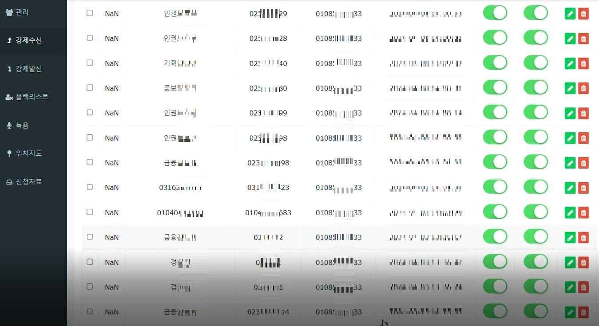
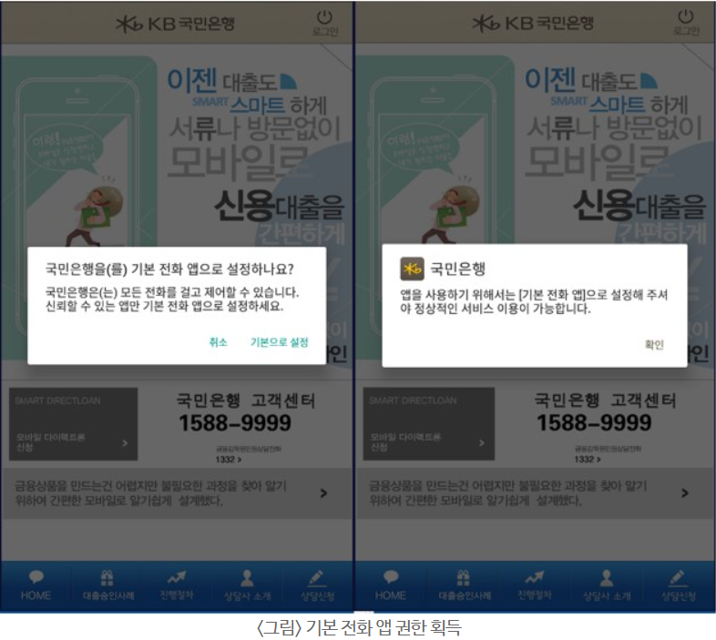
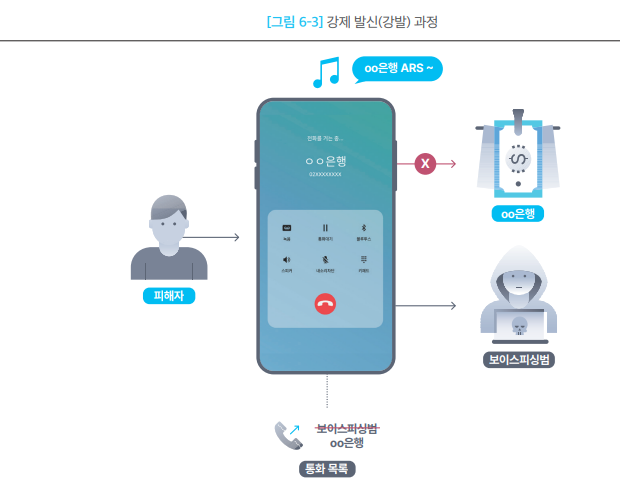
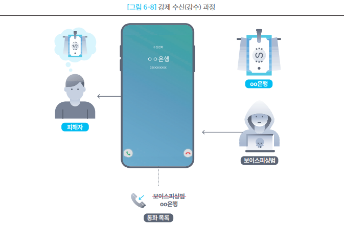
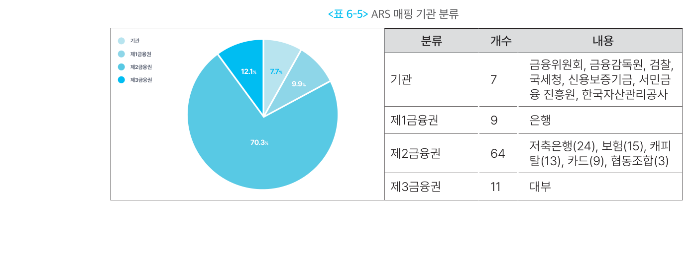
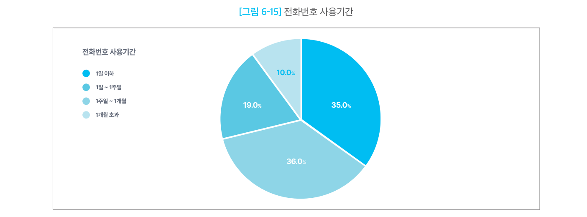

통화·문자 제어형
1. 개요
이 유형은 스마트폰의 전화 연결과 문자 송수신을 공격자가 원하는 방향으로 조작하는 악성 앱이다.
앞선 유형들이 정보를 훔치는 것을 목적으로 한다면, 이 유형의 목적은 다르다. 피해자가 사실을 확인하려는 행동 자체를 무너뜨리는 것이다. 피해자가 은행에 전화해 확인하려 해도 공격자에게 연결되고, 은행이 피해자에게 경고 전화를 걸어도 닿지 않는다.
그래서 이 유형은 피해자를 속이는 데 그치지 않고, 속임수가 유지되도록 만든다. 의심이 들어 확인해 봐도 확인이 안 되니, 피해자는 오히려 더 확신하게 된다.
1-1. 무엇을 제어하는가
| 기능 | 실제 동작 | 공격 효과 |
|---|---|---|
| 발신 전화 가로채기 | 피해자가 기관에 건 전화를 끊고 공격자에게 다시 연결 | 피해자의 사실 확인 차단 |
| 수신 전화 가로채기 | 공격자 전화를 금융회사·수사기관 전화처럼 표시 | 공격자 신원 위장 |
| 수신 전화 차단 | 정상 기관의 전화를 끊고 기록까지 삭제 | 기관의 경고·확인 연락 차단 |
| 통화기록 변조 | 공격자 번호를 기관 번호로 바꾸거나 기록 삭제 | 흔적 은폐와 신뢰 형성 |
| 문자 수신 차단 | 악성 앱이 문자를 먼저 처리해 다른 앱에 전달되지 않게 함 | 인증·경고 문자 차단 |
| 문자 발송·삭제 | 피해자 단말에서 문자를 보내거나 특정 문자를 삭제 | 공격 수행 및 흔적 은폐 |
보고서 원문은 발신·수신 가로채기를 각각 강제 발신 · 강제 수신으로 표기한다. 본 문서는 팀 용어 규칙에 따라 전화 가로채기로 통일한다.
1-2. 다른 유형과의 관계
이 유형은 혼자 쓰이지 않는다. 정보를 훔치는 기능과 짝을 이뤄 동작한다.
flowchart LR
A["개인·단말정보 탈취<br/>금융·인증정보 탈취"] -->|"훔친 정보로<br/>피해자를 파악"| B["통화·문자 제어"]
B -->|"확인 경로를 끊어<br/>속임수를 유지"| C["송금 지시 관철"]정보 탈취는 개인·단말정보 탈취형 · 금융·인증정보 탈취형 문서에서 다룬다.
2. 국내 확인 사례
| 시기 | 사례 | 확인된 내용 |
|---|---|---|
| 2025.04 | 경찰청 주의 발표 | 기관 전화번호 80여 개를 목록화해 어디로 걸어도 공격자에게 연결 |
| 2025.11 | S2W, HeadCalls 분석 | 접근성 권한으로 본체 설치, 기본 전화 앱 장악, 통화기록 변조 |
| 2026.01 | 경찰청 2025년 통계 | 피해액 1조 2,578억원 — 사상 첫 1조원 돌파 |
2-1. 경찰청이 확인한 구조 (2025.04)
경찰청은 범죄조직의 악성 앱 동작을 이렇게 설명했다.
금융감독원·검찰·경찰 등 각 기관에서 실제로 사용 중인 전화번호 80여 개를 목록화한 뒤, 피해자가 그중 어떤 번호로 발신하더라도 범죄조직이 사용하는 하나의 번호로 연결되도록 하거나, 범죄조직이 발신한 전화가 피해자의 휴대전화에는 기관의 대표번호로 표시되게 조작한다.
여기에 정보 탈취가 겹치면 효과가 커진다. 경찰청은 "피해자는 통화상대방이 실제 존재하는 공공기관이고, 그래서 이미 나의 정보를 파악하고 있다는 착각을 하게 된다" 고 지적했다.

실제 제어서버 화면이다. 경찰 · 검찰 · 금융감독원 같은 기관 이름과 함께 화면에 표시할 번호와 실제로 연결되는 번호가 한 줄씩 짝지어져 있다. 목록 전체가 이런 식으로 채워져 있어, 피해자가 어느 기관 번호를 눌러도 같은 곳으로 연결된다.
경찰청이 제시한 위험 신호도 참고할 만하다. 모르는 번호로 전화가 와서 사건조회 · 특급보안·엠바고 · 약식조사·보호관찰 · 자산검수·자산이전 · 휴대전화개통·해외메신저 를 요구하면 보이스피싱으로 봐야 한다. 특급보안·엠바고(외부 발설 금지)와 약식조사·보호관찰은 피해자를 주변과 단절시키기 위한 구실이다.
2-2. HeadCalls (S2W, 2025.11)
2025년 8월 21일부터 국내 모바일 사용자를 대상으로 유포된 악성 앱이다. 두 개로 나뉘어 있다.
| 구성 | 역할 |
|---|---|
| HeadCalls Loader | 피싱 페이지에서 내려받는 앱. 접근성 권한을 악용해 사용자 조작 없이 본체를 설치하고 권한까지 부여 |
| HeadCalls | 실제 통화 가로채기를 수행하는 본체 |
앞의 로더는 로더·드로퍼·다운로더형에서 다룬 구조 그대로다. 통화 제어 기능은 언제나 먼저 들어온 무언가가 설치해 준 결과라는 점을 기억해 둘 만하다.
- 본체는 배터리 최적화 예외 · 알림 접근 · 다른 앱 위에 표시 권한을 요구한다.
- 오버레이로 가짜 다이얼러와 통화 화면을 띄운다.
- 기본 전화 앱으로 설정되면 전화 수발신을 제어하고 통화기록을 조작할 수 있게 된다.
- 연결할 번호는 소켓 통신으로 그때그때 받아온다.
- 사칭 대상은 한국소비자원·서민금융진흥원과 다수 금융회사였다.
이름의 유래도 기능을 보여준다. 통화 권한이 부여되지 않은 상황에서는 헤드셋 버튼 이벤트를 이용해 통화를 강제로 끊는다. 권한이 부족해도 통화를 끊을 방법을 마련해 둔 것이다.
2-3. 피해 규모 (경찰청, 2025년)
| 항목 | 2025년 | 전년 대비 |
|---|---|---|
| 피해액 | 1조 2,578억원 | +47.2% (2024년 8,545억원) |
| 발생 건수 | 2만 3,360건 | +12.1% |
| 건당 피해액 | 5,384만원 | +31.3% |
| 기관사칭형 비중 | 9,884억원 (전체의 78.6%) | 2021년 1,741억원의 약 5.7배 |
기관을 사칭하는 유형이 전체 피해의 약 80% 를 차지한다. 기관 사칭은 피해자가 그 기관에 확인 전화를 걸 가능성을 전제로 하므로, 통화 가로채기가 함께 쓰일 수밖에 없는 구조다.
3. 핵심 기능
네 가지를 같은 항목으로 정리했다.
3-1. 기본 전화 앱 장악
모든 통화 제어의 출발점이다. 이것이 되지 않으면 나머지가 성립하지 않는다.
- 동작 방식
- 설치 후 "기본 전화 앱으로 설정하시겠습니까?" 화면을 띄워 사용자가 직접 바꾸게 한다.
- 기본 전화 앱이 되면 통화 화면을 앱이 직접 그린다. 안드로이드는 기본 전화 앱의 자격 요건으로 다이얼 화면과 통화 화면을 모두 직접 구현하도록 요구한다.
- 통화기록을 읽는 것뿐 아니라 고치고 지우는 것도 가능해진다.
- 왜 통하는가
- 통화 화면을 직접 그리는 것은 정상 기능이다.
T전화같은 앱도 같은 방식으로 동작한다. - 화면에 무엇을 표시할지 앱이 정하므로, 표시되는 번호와 실제 연결된 번호를 다르게 만들 수 있다.
- 통화 화면을 직접 그리는 것은 정상 기능이다.
- 한계와 조건
- 코드만으로는 안 된다. 반드시 사용자가 확인 대화상자에서 직접 승인해야 한다. 사회공학이 필수 단계다.
- 안드로이드 15부터는 마켓을 거치지 않은 앱이 이런 역할을 앱 안에서 유도해 얻을 수 없다. 설정 앱의 해당 앱 정보 화면까지 사용자가 직접 들어가야 한다. 다만 접근성 권한을 먼저 얻으면 앱이 대신 눌러줄 수 있다.
- 구글 플레이는 통화기록·전화 권한 사용을 기본 전화 앱 같은 핵심 기능에만 허용한다. 정식 마켓 배포가 어려워 대부분 마켓 외 경로로 유포된다.

안드로이드는 이 단계에서 "모든 전화를 걸고 제어할 수 있습니다. 신뢰할 수 있는 앱만 기본 전화 앱으로 설정하세요" 라고 경고한다. 그런데 악성 앱은 그 직전에 "정상적인 서비스 이용을 위해 필요하다" 는 안내를 먼저 띄운다. 시스템 경고보다 앱의 설명을 먼저 읽게 만드는 순서다.
3-2. 발신 전화 가로채기
- 동작 방식
- 피해자가 목록에 있는 번호(예: 은행 대표번호)로 전화를 건다.
- 악성 앱이 통화 시작을 감지하고 해당 기관의 ARS 연결음을 재생하면서 전화를 끊는다.
- 곧바로 공격자 번호로 다시 전화를 건다.
- 화면에는 피해자가 걸었던 기관 번호와 연락처에 저장된 이름을 표시한다.
- 통화가 끝나면 통화기록을 손본다. 피해자가 건 기록을 지우고, 실제 통화한 공격자 번호를 기관 번호로 바꿔 넣는다.
- 왜 통하는가
- 피해자가 직접 번호를 눌렀다. 링크를 누른 것도, 전화를 받은 것도 아니라 자기가 확인차 건 전화다. 의심할 이유가 없다.
- ARS 연결음이 재생되므로 연결 과정이 정상처럼 들린다.
- 통화기록에도 기관과 통화한 것으로 남아, 나중에 확인해도 어긋나지 않는다.
- 한계와 조건
- 미리 등록된 번호에만 동작한다. 목록에 없는 번호로 걸면 정상 연결된다.
- 기관마다 다른 ARS 음원이 필요하다. 준비가 안 된 기관은 어색해진다.
- 다른 사람의 전화기로 걸면 통하지 않는다.

피해자는 은행 번호로 걸었고 화면에도 은행이 떠 있지만, 실제 연결은 보이스피싱범과 이뤄진다. 통화가 끝나면 통화 목록에도 은행과 통화한 것으로 남는다.
3-3. 수신 전화 가로채기와 수신 차단
- 동작 방식
- 수신 가로채기 — 공격자가 전화를 걸면, 화면에는 금융회사·수사기관의 이름과 대표번호가 뜬다. 통화가 끝나면 통화기록도 그 기관에서 온 것으로 바꾼다.
- 수신 차단 — 차단 목록에 있는 번호(금융감독원, 카드사 등)에서 전화가 오면 받기 전에 끊고 통화기록에서도 지운다. 피해자는 전화가 왔다는 사실 자체를 모른다.
- 왜 통하는가
- 걸려 온 전화의 발신번호는 사용자가 검증할 수단이 없다. 화면에 뜬 것을 믿을 수밖에 없다.
- 차단은 더 은밀하다. 무언가 일어난 흔적이 아예 남지 않는다.
- 한계와 조건
- 차단 목록도 미리 등록돼 있어야 한다. 목록에 없는 기관은 연결된다.
- 기관이 문자나 앱 알림 같은 다른 경로로 연락하면 막지 못한다.

발신과 방향만 반대일 뿐 구조는 같다. 보이스피싱범이 걸었는데 화면에는 은행에서 걸려 온 것으로 표시되고, 통화 목록도 그렇게 남는다.
3-4. 문자 제어
- 동작 방식
- 악성 앱을 기본 문자 앱으로 설정하게 유도한다. 기본 문자 앱만 받을 수 있는 문자 전달 신호가 있어서, 이걸 차지하면 문자를 먼저 처리할 수 있다.
- 문자를 받으면 다른 앱으로 전달되지 않게 중단시킨다. 문자 앱에도, 금융 앱에도 도착하지 않는다.
- 명령에 따라 피해자 단말에서 문자를 발송하거나 특정 문자를 삭제한다.
- 왜 통하는가
- 인증번호나 거래 알림 문자가 오지 않으면 피해자는 통신 문제라고 여긴다.
- 금융회사가 문자로 보내는 이상거래 경고도 함께 막힌다.
- 한계와 조건
- 기본 문자 앱 설정 역시 사용자 승인이 필요하다.
- 앱 푸시 알림이나 이메일로 오는 통지는 막지 못한다.
4. 전체 공격 흐름
flowchart TD
A["금융회사·공공기관 사칭 앱<br/>설치 유도"] --> B["접근성 · 전화 · 문자<br/>권한 확보"]
B --> C["기본 전화 앱 ·<br/>기본 문자 앱으로 설정"]
C --> D["가로채기·차단 대상<br/>번호 목록 수신"]
D --> E["피해자의 발신·수신 전화를<br/>공격자에게 연결"]
E --> F["가짜 통화 화면 표시 ·<br/>기관 ARS 재생"]
F --> G["문자 수신 차단 ·<br/>발송 · 삭제"]
G --> H["통화기록을 기관 번호로<br/>변조하거나 삭제"]
H --> I["피해자가 공격자를<br/>정상 기관으로 믿고 송금"]5. 실제 사례에서 확인된 구조
Operation BlackEcho의 2차_call 악성 앱이 통화·문자 기능을 전담했다.
5-1. 공격 준비 — ARS 음원과 번호 목록
가로채기가 자연스럽게 보이려면 기관별 연결음이 미리 있어야 한다.
- ARS 음원은 앱 안에 압축된 채로 들어 있다가, 실행 시 외부 저장소에 풀린다.
- 전화번호와 음원 파일을 짝지어 앱 내부 데이터베이스에 저장한다.
- 매핑된 규모는 91개 기관 · 368개 번호 · 음원 93개다.
사칭 대상 기관의 분포가 눈에 띈다.
| 구분 | 기관 수 | 비중 |
|---|---|---|
| 제2금융권 (저축은행 24 · 보험 15 · 캐피탈 13 · 카드 9 · 협동조합 3) | 64 | 70.3% |
| 제3금융권 (대부) | 11 | 12.1% |
| 제1금융권 (은행) | 9 | 9.9% |
| 기관 (금융위·금감원·검찰·국세청·신용보증기금·서민금융진흥원·한국자산관리공사) | 7 | 7.7% |

약 70%가 제2금융권이다. 대출을 빙자해 피해자를 유인하는 수법과 맞물린다.
전화번호 목록은 고정되어 있지 않다. 1시간 주기로 서버에 요청해 갱신하며, 차단 번호·발신 가로채기 번호·수신 가로채기 번호를 각각 추가·수정·삭제하는 명령이 따로 있다. 가로채기 전체를 켜고 끄는 명령도 있다.
5-2. 실제로 어떻게 걸렸나
보고서에 실린 실제 데이터를 보면 동작이 분명해진다. 카드 부정 발급을 빙자한 시나리오에서, 피해자에게는 "금융사고는 금융감독원 국번없이 1332" 라는 안내가 표시됐다.
그리고 서버가 내려준 목록에는 이렇게 들어 있었다.
| 대상 | 화면에 표시할 번호 | 실제로 연결되는 번호 |
|---|---|---|
| 금융감독원 | 1332 |
공격자 번호 |
| 비자카드 | 18992364 |
같은 공격자 번호 |
| 중앙지검 보이스피싱전담팀 | 01035708242 |
같은 공격자 번호 |
세 곳 중 어디로 걸어도 같은 공격자에게 연결된다. 차단 목록에는 1332(금융감독원)와 114도 함께 들어 있었다. 피해자가 걸면 공격자에게 연결하고, 기관이 걸어오면 아예 차단하는 양방향 구조다.
5-3. 번호는 오래 쓰지 않는다
공격자가 쓰는 전화번호의 수명을 분석한 결과다.
| 사용 기간 | 비중 |
|---|---|
| 1일 이하 | 35% |
| 1일 ~ 1주일 | 36% |
| 1주일 ~ 1개월 | 19% |
| 1개월 초과 | 10% |

71%가 1주일 안에 교체된다. 번호 기반 차단 목록으로 대응하는 데 한계가 있다는 뜻이다.
5-4. 삭제 대상 앱 목록
악성 앱은 삭제할 앱 목록을 들고 있었다. 16개인데, 구성이 의미심장하다.
| 분류 | 앱 |
|---|---|
| 전화 앱 (스팸·피싱 경고 기능) | T전화, 후후, 뭐야이번호, 후스콜, 리멤버Call |
| 피싱 예방·신고 앱 | 피싱아이즈, 시티즌코난, 더치트, 스마트피싱보호, 경찰청 사이버캅, 경찰청 폴-안티스파이 |
| 백신 | 알약M, V3 Mobile Security |
| 금융 앱 | 하나원큐, 신한카드 |
피해자가 의심을 확인할 수단을 미리 치우려는 목록이다. 스팸 경고 기능이 있는 전화 앱과 피싱 신고 앱이 대부분이다. 다만 보고서는 이 목록을 실제로 사용하는 코드는 확인되지 않았고 추후 구현 가능성으로 봤다.
5-5. 감염된 앱에 따라 연결 상대가 달라진다
악성 앱은 서버에 번호 목록을 요청할 때 단말 식별값과 앱 식별값을 함께 보낸다. 서버는 그 앱에 맞는 번호 목록을 내려준다. 결과적으로 어떤 기관을 사칭한 앱에 감염됐는지에 따라 연결되는 상대가 달라진다. 사칭 기관과 통화 상대를 일치시키기 위한 구조다.
6. 공격자가 통화·문자를 제어하는 이유
- 피해자가 직접 확인하지 못하게 하기 위해서 — 기관에 전화해 사실을 확인하는 것이 가장 확실한 방어책이다. 이 경로를 끊는 것이 첫 번째 목적이다.
- 공격자를 기관으로 믿게 만들기 위해서 — 화면에 기관 이름과 대표번호가 뜨면 의심이 사라진다.
- 기관의 경고 연락을 차단하기 위해서 — 금융회사가 이상거래를 발견해 연락해도 피해자에게 닿지 않는다.
- 흔적을 지우기 위해서 — 통화기록과 문자를 손보면 피해자가 나중에 확인해도 어긋나는 점을 찾지 못한다.
- 피해자를 통화 안에 고립시키기 위해서 — 외부 확인이 막힌 상태에서 통화가 길어지면 피해자는 상대의 지시만 따르게 된다.
7. 탐지 관점 정리
7-1. 봐야 할 흔적
| 구분 | 주요 흔적 |
|---|---|
| 앱 구성 | 통화 화면을 대체하겠다고 선언한 앱 · 통화 화면·다이얼 화면을 직접 그리는 구성 요소 |
| 권한·역할 | 기본 전화 앱·기본 문자 앱 변경 요구 · 접근성 권한과 오버레이 권한 동시 요구 · 배터리 최적화 예외 요구 |
| 앱 내부 | assets에 들어 있는 정체불명 음원 압축 파일 · 외부 저장소에 풀린 다수의 ARS 음원 |
| 통신 | 짧은 주기로 반복되는 전화번호 목록 요청 · 통화 시작·종료 시점에 발생하는 통신 |
| 통화기록 | 발신 기록이 사라짐 · 기록의 번호가 사후에 바뀜 · 수신 기록 없이 끊긴 통화 |
| 단말 상태 | 스팸 경고 기능이 있는 전화 앱이나 피싱 신고 앱이 사라짐 |
특히 통화 화면을 대체하겠다는 선언은 앱 구성 정보에 명시적으로 남는다. 정상 전화 앱도 같은 선언을 하므로 이것만으로 판단할 수는 없지만, 금융·공공기관을 자처하는 앱이 이 선언을 갖고 있다면 정상적인 조합이 아니다.
7-2. 이 유형이 특히 까다로운 이유
| 어려운 점 | 내용 |
|---|---|
| 사용자 승인을 거친다 | 기본 전화 앱 변경은 사용자가 직접 승인해야 한다. 기록상으로는 정상 절차다. |
| 정상 앱과 구조가 같다 | 통화 화면을 직접 그리는 것은 정상 전화 앱의 자격 요건이다. |
| 번호 차단이 오래 못 간다 | 공격자 번호의 71%가 1주일 안에 교체된다. |
| 피해자 진술이 어긋난다 | 피해자는 기관과 통화했다고 기억하고, 통화기록도 그렇게 남아 있다. |
가장 어려운 점
이 유형은 피해자의 확인 절차 자체가 무력화된다. "의심되면 기관에 직접 전화해 확인하라"는 원칙이 통하지 않는다. 게다가 통화기록까지 변조되므로 사후 조사에서도 피해자 단말의 기록을 그대로 믿을 수 없다. 따라서 단말에 남은 통화기록보다 통신사 측 통화 내역과의 대조가 결정적인 근거가 된다.
7-3. 통화 단계 대응
정부와 통신사는 통화 내용을 실시간으로 분석하는 방향으로 대응하고 있다. 2026년 2월 과학기술정보통신부 발표에 따르면, 삼성전자와 이동통신 3사가 통화 중 실시간 탐지·알림 서비스를 제공한다.
- 통화 내용 분석은 외부 서버가 아니라 단말 안에서 이뤄진다(온디바이스 AI).
- 의심 시 통화 중에 경고 팝업·알림음·진동으로 알린다.
- KT 사례로 2025년 통화 4,680만여 건 중 3천여 건의 보이스피싱을 예방했고, 탐지 정확도는 2025년 1분기 90.3%에서 4분기 97.2%로 올랐다.
- 일부 서비스는 전화 가로채기 탐지 알림을 별도 기능으로 제공한다.
정부는 2026~2027년에 관계기관·기업이 보이스피싱 데이터를 실시간으로 공유하는 공동 대응 플랫폼을 구축할 계획이다.
참고 자료
- 경찰청 국가수사본부, 「그놈 목소리, 치밀한 각본 주인공이 되시겠습니까」 보도자료(2025.04.28 조간) — 정책브리핑 게재본 https://www.korea.kr/news/policyNewsView.do?newsId=148942500
- S2W TALON, 「HeadCalls 악성앱 상세 분석: 통화를 가로채는 한국 대상 보이스피싱 악성앱」, 2025.11.18 — https://s2w.inc/ko/resource/detail/962
- 금융보안원, 「금융 및 백신 앱으로 위장한 보이스피싱 악성 앱 프로파일링」(Operation BlackEcho), 2024.12 — https://www.fsec.or.kr/bbs/detail?bbsNo=11611&menuNo=244
- 과학기술정보통신부, 「인공지능으로 통화 중에 보이스피싱 잡는다」, 2026.02.12 — https://www.korea.kr/news/policyNewsView.do?newsId=148959497
- 경찰청, 「보이스피싱 현황」 공공데이터 (기준 2025.12.31) — https://www.data.go.kr/data/15063815/fileData.do
- 헤럴드경제, 「악성 앱으로 휴대폰 장악·금융사 사칭…지난해 보이스피싱 피해 1.2조 '사상 최대'」, 2026.01.24 — 경찰청 자료 인용 보도 https://biz.heraldcorp.com/article/10661923
- 파이오링크, 「안드로이드 뱅킹 악성코드(kb.apk) 분석보고서」, 2021.10.12 — https://www.piolink.com/kr/service/Security-Analysis.php?bbsCode=security&vType=view&idx=78
- Android Developers, 「Build a default phone application」 — https://developer.android.com/develop/connectivity/telecom/dialer-app
- 용어 정의는 부록 · 용어 정리 참고